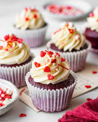

Red Velvet Cupcakes

Description
Red velvet went from being nowhere to being everywhere. This would of course imply that
it's very special. Indeed, red velvet brings a smile to everyone's face and is especially
loved by kids. The rich colour and flavour just pulls everyone in. Red velvet flavours
are perfect for any kind of desserts, honestly, anything they make up just turns out so
so well.
In this recipe, we'll be making red velvet cupcakes. These are perfect for quick treats,
on special occassions such as Valentine's day or even for everyday endulgements. The colour
is sure to add a pop to your table and don't worry about it being finished. Before you know
it, they'd have vanished from sight xD
Now, onto the recipe!
Ingredients
- 3/4 cup (180 ml) milk
- 1 tbsp (15 ml) vinegar
- 1/2 cup (50 gms) castor sugar
- 1/4 cup (60 ml) oil
- 1/2 tsp (1.5 ml) vanilla
- 2 tbsp (30 gms yoghurt
- 3/4 cup (180 gms) flour
- 1 tbsp (7.5 gms) cocoa powder
- 1/2 tsp (1.5 gms) baking soda
- 1 tbsp (15 ml) red food colour
For frosting
- 1 cup (200 gms) cream cheese
- 1/2 cup (100 gms) butter
- 1/4 tsp (0.75 ml) vanilla essence
- 1 1/2 cup (195 gms) icing sugar
- sprinkles (to top)
Steps
-
Preheat your oven at 180 degree celcius and line your cupcake tray with cupcake liners.
-
In a bowl add in oil and sugar. Make sure to whisk these two really well, till the
mixture becomes light and pale.
- Now add in vanilla yogurt. Mix this in as well.
- Add in red food color and buttermilk and mix that in.
- Put a large sieve over the same bowl and sift flour, cocoa powder and baking soda.
-
Once sifted, mix in dry ingredients into the wet ingredients and mix just till there are
very small flour pockets left.
-
Using an ice cream scoop, fill ¾th of each cupcake liner and bake these at 180 degree
celcius for 20-25 minutes.
- Let them cool down completely.
For frosting
-
In a bowl add in softened butter and softened cream cheese. Using an electric whisk,
whip the two together for 2 minutes.
- Add in vanilla and whip again for a minute or so.
-
Sift in icing sugar and whip everything for another 2 minutes or until you see the
frosting hold shape.
-
Transfer frosting into a piping bag with an open star and and pipe the frosting on top
of the cooled cupcakes.
- Add sprinkles and enjoy!